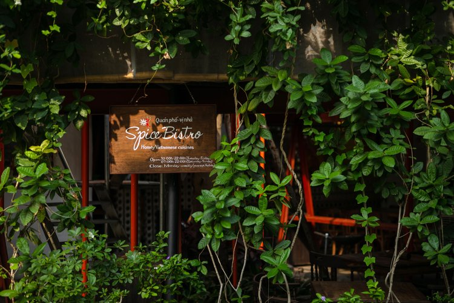
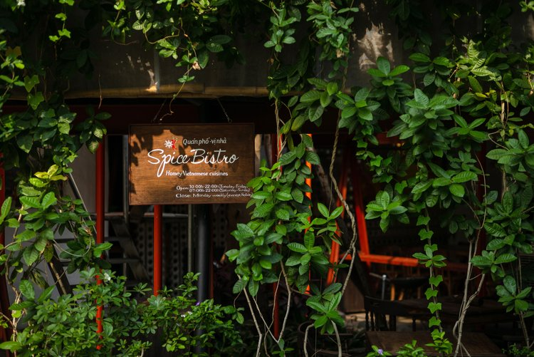

Quán phố, ngày vui Cơm nhà ấm áp Bạn hữu cùng cười
Đầu tiên là chút duyên thành phố. Ngoài những bê tông và đèn giao thông và kênh đào và những công viên tỉa vội, Sài Gòn còn nhiều mấy hẻm xéo ngõ quanh, lề đường cây nhiều cây ít, chợ thấp cầu cao. Người ta lợp vải dù xanh đỏ lên trước nhà và khoảng không dưới bạt trở thành sân. Người ta đặt một xe xay mía cạnh cột điện và nó trở thành quán nước (có cả cà phê trà đá). Tiệm chạp phô vẫn mở dù cửa hàng tiện ích quẩn quanh góc phố, vì chỉ tiệm chạp phô mới có mấy thứ xí muội tắc chanh bánh phồng gạo con nít ham.
Nhà to đường lớn dĩ nhiên cần vươn lên, nhưng chính những khấp khểnh, đan xen, lấm ta lấm tấm này cho Sài Gòn cái duyên đô thị. Nó nuôi dưỡng nếp sống Sài Gòn. Ở đây giao thông lúc nào cũng nhộn nhịp. Người ngày người đêm khiến phố xá luôn sáng đèn. Nhịp điệu gấp gáp này giúp người ta cứng cỏi lên và theo cách nào đó, sống ngày càng nhanh hơn. Người ta cảm thấy nếp sinh hoạt của mình hoà vào thành phố như lời ca ngắn, đều, viết theo nhịp gấp gọn của một ca khúc điện tử phát trực tuyến. Và người ta có dễ mệt, nhưng vẫn thấy cần cạnh tranh. Thì khúc hát cuộc sống của mỗi người lại có phần chật chội hơn.
Và khi đó người ta nghĩ về những điều khoan thai cũ.
Như tiếng rao. Ai ve chai đi. Bánh mì nóng không? Đậu hũ đây.
Hoặc tiếng hủ tiếu gõ. Lộc cộc lộc cộc. Lắc cắc lắc cắc. Không có lời rao nhưng hễ nghe thấy tiếng gõ là tưởng tượng ra được hương vị hủ tiếu mì. Hoành thánh ngọt. Nước dùng có cái hương vị khó quên, ăn một lần nhớ mãi. Giờ ít chỗ bán hơn xưa nhiều rồi.
Ta nhớ những bánh chưng bánh giò bán theo giỏ đậy ni lông trên xe đạp, những quán cà phê vợt sôi động buổi sáng cập nhật tin tức trong ngày, những tà áo thướt tha và những xích lô. Và ta để mình hoài niệm. Hoài niệm về một cái duyên ta biết rằng còn đó nhưng khó tìm hơn xưa.
Quán-nhà Spice Bistro ở mấy quận trung tâm, góc phố thị đấy nhưng không gian gợi nhớ nhẹ nhàng về sân nhà, góc bếp yên bình. Khi khách xem chọn món ăn, xin khe khẽ tiếp chuyện đôi câu.
Trước nhất, bếp nhà mời quý khách dùng cơm.
 
